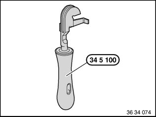

34 32 861 Replacing All Brake Pipes
34 32 861 Replacing all brake pipesSpecial tools required:
Note:
The brake lines are only supplied in the straight version and correct length with connecting nipple.
Read and comply with General Information.
After completing work, bleed brake system.
Observe safety instructions on raising the vehicle.
The new brake lines are bent into shape with bending tool 34 5 100.
Removed brake pipes can be used as templates for bending.

Important!
- Protective coating of brake line must not be damaged during bending.
- Do not kink or bend back brake lines.
- Watch distances to rigid and movable vehicle parts.
Brake lines may not make contact or rub.
- Tighten down brake line couplings with torque wrench.
Installation:
Tightening torque 34 32 1AZ.